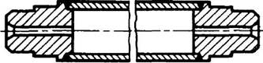
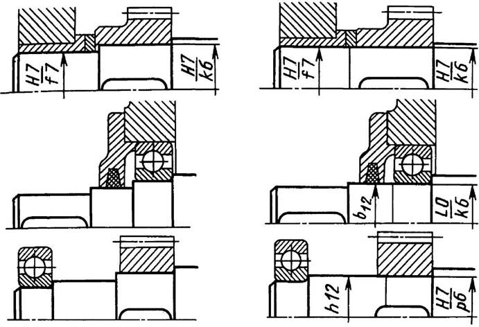
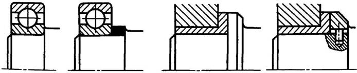

Конструкция валов
Существенного снижения массы вала и повышения жесткости при той же прочности достигают применением полых валов, так как внутренние волокна материала при кручении и изгибе мало нагружены (табл. 2 "Пример расчета").
Валы со значительной разницей диаметров отдельных участков и фланцевые нередко выполняют с приваркой к заготовке колец (буртиков) и фланцев. Длинные валы со свободной средней частью изготовляют полыми из трубы с приваркой концевых частей (рис. 1).

Рис. 1. Полый вал из трубы с приваренными концами

Рис. 2. Пример устранения переходных уступов на валах:
а — вариант с уступами; б — без уступа

Рис. 3. Примеры уменьшения высоты уступов с применением упорных колец
Повышения сопротивления усталости валов (и осей) достигают снижением местной концентрации напряжений, создавая более плавные переходы в сечениях наиболее нагруженных участков (рис. 2).
Более технологична конструкция валов с меньшим числом уступов и буртиков, а также с меньшей их высотой. Примеры уменьшения высоты уступов с применением упорных колец приведены на рис. 3.